Web avancé
Cours mis à jour par Gaël Guibon
Technologies client : approfondissement
- Programmation orientée objet en JS
- jQuery
- AJAX
Programmation objet en JavaScript
Deux manères de créer des objets
En utilisant un initialisateur d'objet
var edwin = { name: "Starr", born: 1942 };
console.log(edwin.name); // Affiche "Starr"Avec un constructeur
function Artist(name, born){
this.name = name;
this.born = born;
}
var edwin = new Artist("Starr", 1942);
console.log(edwin.name); // Affiche "Starr" aussiPrototypes
Deux représentations possibles pour la POO
- Classes : utilisé par Java, C++...
- Prototypes : utilisé par JavaScript mais aussi Self, Lua, Cecil...
Principe
- Création d'objets généraux, appelés prototypes
- Les prototypes peuvent alors être clonés et étendus
Pas de véritable notion d'héritage
- Pour les clones, les prototypes ne sont qu'un outil de délégation
- Quand ils ne possèdent pas une proprité ou une fonction, le navigateur va consulter leurs prototypes
Exemples
Création de prototype
function guitarist(name, guitar) {
this.name = name;
this.guitar = guitar;
}
var jimi = new guitarist("jimi", "fender");
var eric = new guitarist("eric", "fender");Ajout d'une propriété à un objet
jimi.born = 1942;
console.log(jimi.born); // 1942
console.log(eric.born); // undefinedborn ajouté à jimi, mais pas à eric.
Ajout d'une propriété à un prototype
Dans le constructeur
function guitarist(name, guitar) {
this.name = name;
this.guitar = guitar;
this.born = 1942;
}Il est aussi possible d'utiliser l'attribut prototype
function guitarist(name, guitar) {
this.name = name;
this.guitar = guitar;
}
guitarist.prototype.born = 1942;Classes en JavaScript
Fonctionnalité de ES6
- Pas encore implémenté par tous les navigateurs actuels
- Syntaxe similaire à Java
- Sous le capot, utilise les prototypes
Syntaxe
class Artist {
constructor(name) {
this.name = name;
}
}
class Guitarist extends Artist {
constructor(name, guitar) {
super(name);
this.guitar = guitar;
}
}Commentaires en JavaScript
Commenter une fonction
/**
* Draw a snake
* @param {Object} snake - The snake to draw
* @param {string} headColor - The color of the head of the snake
* @param {string} tailColor - The color of the tail of the snake
*/
function drawSnake(snake, headColor, tailColor){
// Head
grid[snake.head[0]][snake.head[1]].css("background-color", headColor);
// Tail
for (var k = 0; k < snake.tail.length; k++){
grid[snake.tail[k][0]][snake.tail[k][1]].css("background-color", tailColor);
}
}Commenter un constructeur
/**
* The prototype constructor of Snake objects
* @constructor
* @param {number} x - The initial x coordinate of the snake.
* @param {number} y - The initial y coordinate of the snake.
*/
function Snake(x, y){
this.head = [x, y];
this.tail = [
[x, y],
[x, y],
[x, y],
[x, y],
[x, y]
];
var direction = randomDirection(); // private attribute
/**
* Get the direction of the snake
* @return {number} the direction
*/
this.getDirection = function(){
return direction;
}
/**
* Set the direction of the snake
* @param {number} d - the direction
*/
this.setDirection = function(d){
if (!oppositeDirections(direction, d)){
direction = d;
}
}
}Générer une documentation
- Installer Node.js
- Ouvrir l'invite de commande
- Installer jsdoc avec la commande
npm install -g jsdoc - Générer la documentation avec la commande
jsdoc path/to/file.js
Technologies client : approfondissement
- Programmation orientée objet en JS
- jQuery
- AJAX
jQuery
Bibliothèque JavaScript
- Très facile à apprendre
- Fonctionne sur tous les navigateurs
- Une des rares à résister au passage du temps
Utilisation
- Soit en téléchargeant la bibliothèque : www.jquery.com
- Soit en l'intégrant via un Content Delivery Network (CDN)
<script src="https://ajax.aspnetcdn.com/ajax/jQuery/jquery-3.3.1.min.js"></script>Syntaxe de jQuery
$(selector).action()$(): fonction principale jQueryselector: sélection d'éléments de l'arbre DOMaction(): appel de méthode (action à effectuer)
Sélections d'éléments de l'arbre DOM
Utilise la syntaxe CSS :
| Syntaxe | Résulat |
|---|---|
$("*") |
Tous les éléments de l'arbre DOM |
$("p") |
Tous les éléments paragraphe |
$("#lala") |
L'élément ayant l'identifiant « lala » |
$(".lala") |
Tous les éléments de la classe « lala » |
$("ul li:first") |
Le premier élément d'une liste à puce |
Appel de méthodes
Getters et setters
| Syntaxe | Résulat |
|---|---|
$("#lala").css("color") |
Récupère la valeur de la couleur de l'élément « lala » |
$("#lala").css("color", "blue") |
Colore en bleu l'élément « lala » |
$("#lala").text() |
Récupère le contenu textuel de « lala » |
$("#lala").text("tralala") |
Change le contenu textuel de « lala » en « tralala » |
$("#lala").attr("width") |
Récupère la largeur de « lala » |
$("#lala").attr("width", "150") |
Change la largeur de « lala » à 150px |
Evénements
// Change the direction of the snake of the user using the keybord
$(document).keydown(function(e){
var code = e.keyCode;
if (code == LEFT || code == UP || code == RIGHT || code == DOWN){
goodSnake.setDirection(code);
}
});Autres fonctions d'événements : click, mouseup, hover, keypress, submit, focus, resize...
Fonctions d'effet
| Syntaxe | Résulat |
|---|---|
animate() |
Lance une animation (paramétrable) sur les éléments sélectionnés |
fadeIn() |
Fait apparaître les éléments sélectionnés avec un fondu |
slideDown() |
Fait apparaître les éléments avec un glissement vers le bas |
stop() |
Arrête l'animation des éléments sélectionnés |
Manipulation de l'arbre DOM
| Syntaxe | Résulat |
|---|---|
$("#lala").parent() |
Renvoie l'élément parent de « lala » |
$("#grandfather").children() |
Renvoie tous les élément fils de « lala » |
$("#lala").remove() |
Supprime « lala » et tous ses descendants |
$("#lala").empty() |
Supprime tous les descendants de « lala » |
Technologies client : approfondissement
- Programmation orientée objet en JS
- jQuery
- AJAX
AJAX
Asynchronous JavaScript and XML
Technologie Web permettant
- D'échanger des données avec le serveur
- De manière asynchrone
- Sans avoir à actualiser toute la page
Correspond à l'ensemble des technologies
- HTML et CSS
- XML ou JSON (ou autre)
- L'objet
XMLHttpRequestde JavaScript - Nouvelles approches javascript :
asyncetawait
AJAX et Google
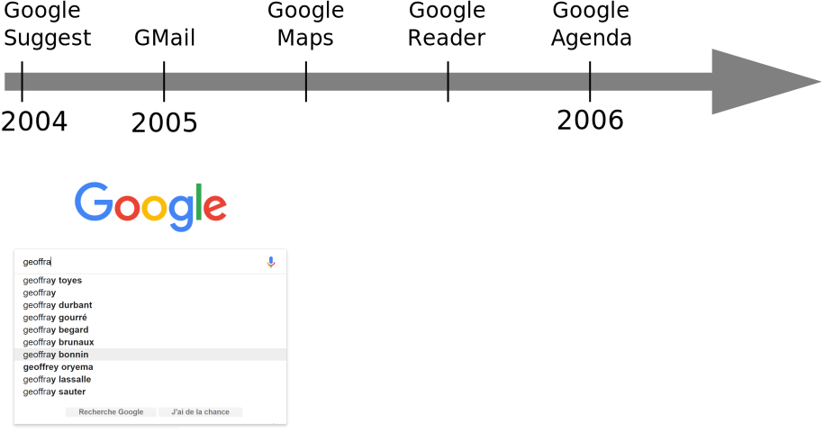
Focus sur Google Agenda
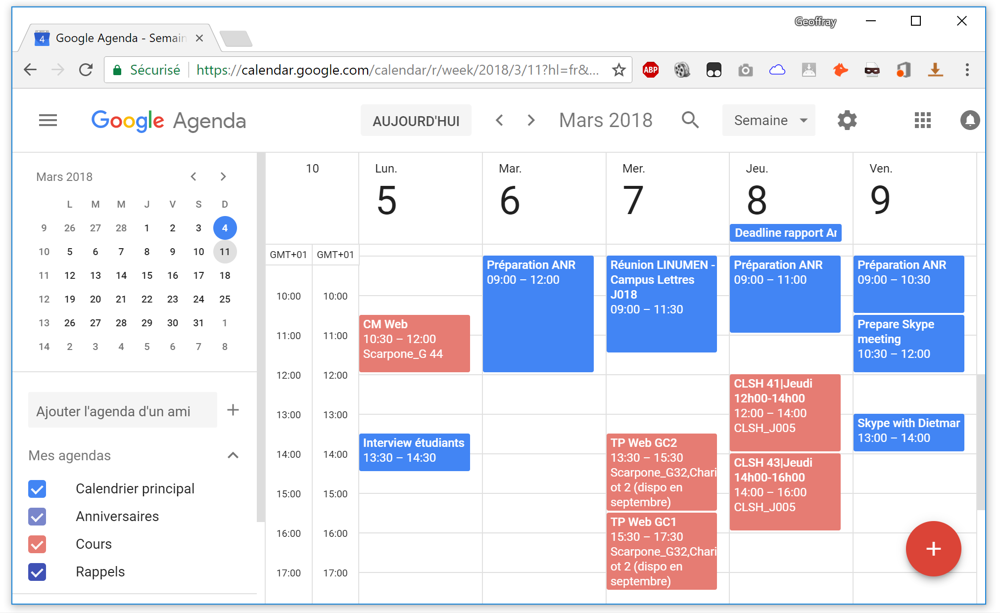
 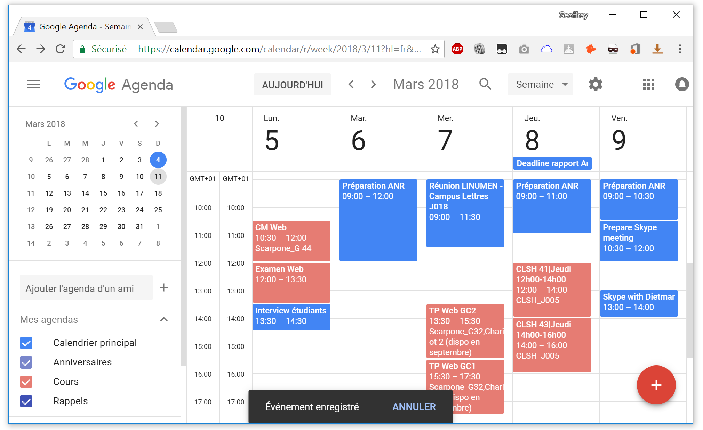
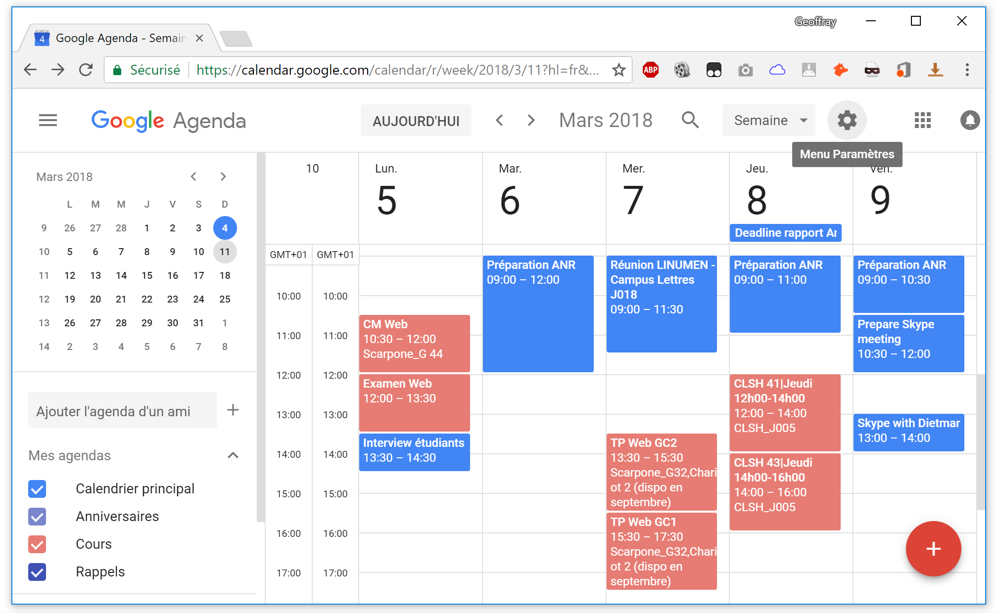
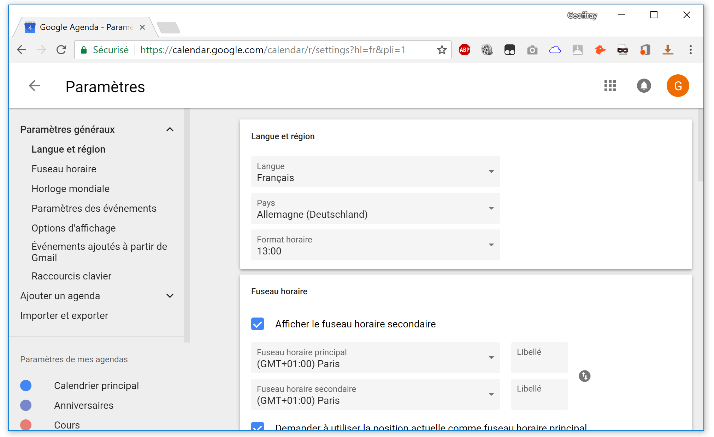
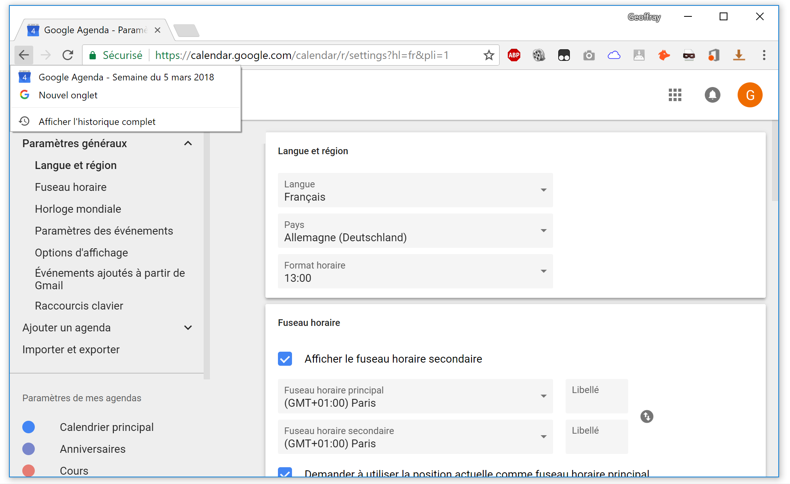
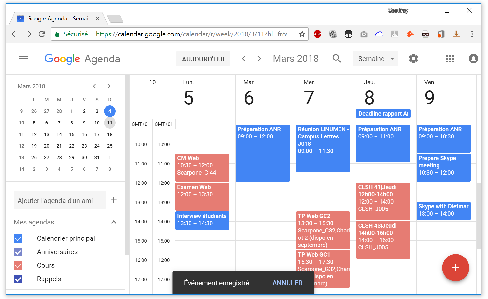
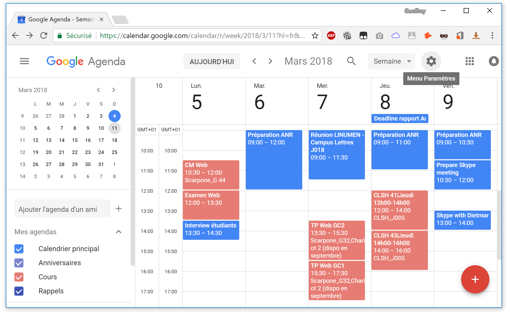
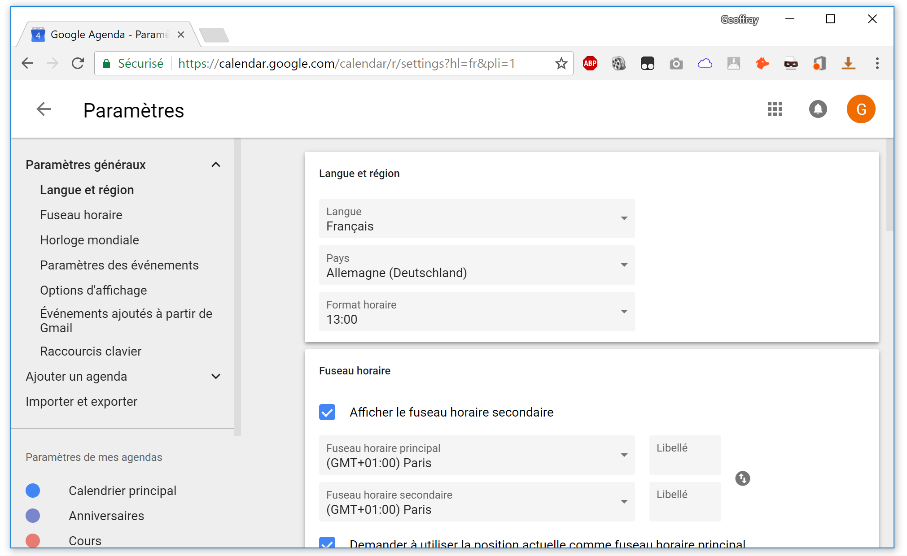
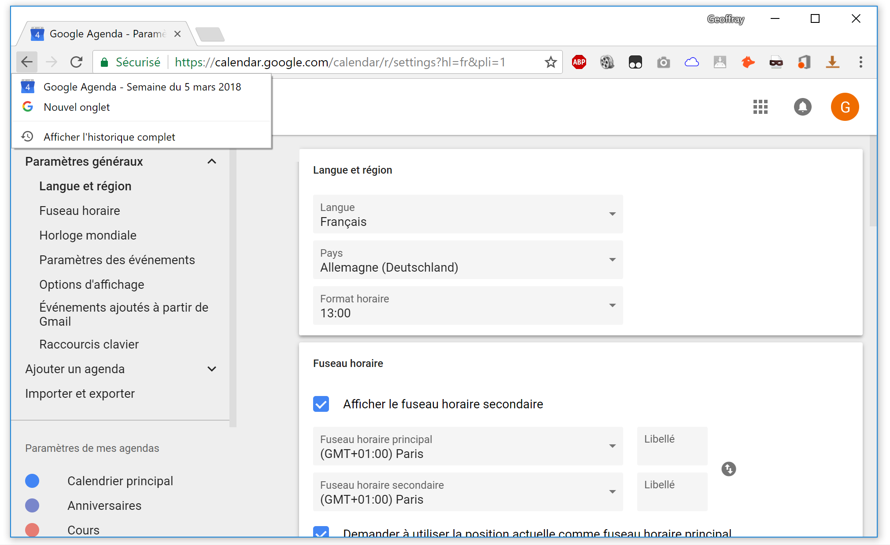
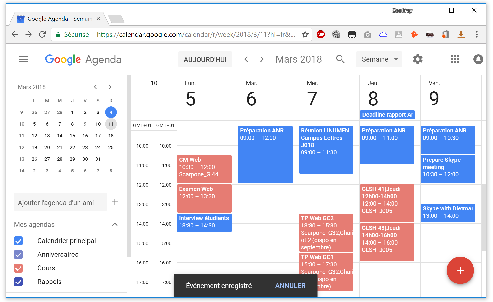
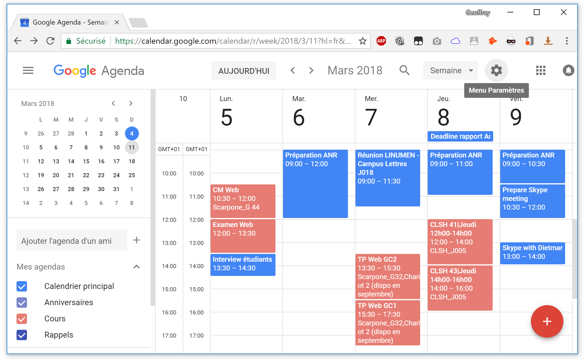
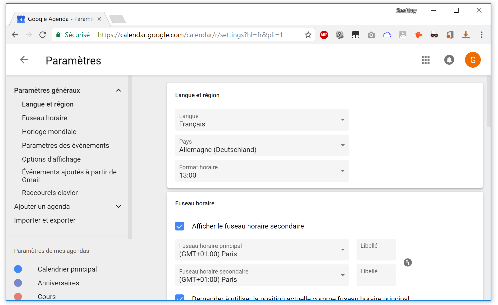
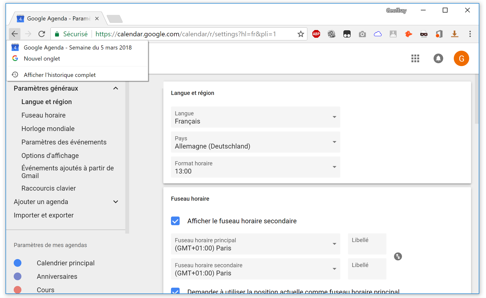
Quelques règles pour AJAX
- Informer l'utilisateur du retour de ses actions
Tout est dans une page unique
- Gérer le bouton précédent (back button)
Pas de page précédente
- Bien dissocier forme et contenu
Pour optimiser les transferts
- Gérer les données sous forme de cache local
Pour optimiser les transferts
Fonctionnement d'AJAX
L'appel AJAX côté JavaScript
Utilisation de l'objet XMLHttpRequest
- Permet d'envoyer une requête HTTP
- Et de recevoir la réponse
Compatibilité
- Compatible avec tous les navigateurs actuels
- IE6 et antérieurs utilisent
ActiveXObject
Envoi d'une requête
// Création d'une instance de l'objet XMLHttpRequest
var req = new XMLHttpRequest();
// Paramétrage de la requête
req.open('GET', 'data.json');
// Envoi de la requête
req.send();
Paramètres de open(method, url)
method:GETouPOSTurl: URL du contenu à récupérer
Réception de la réponse
// Réception de la réponse
req.onreadystatechange = function(){
if (req.readyState == 4 && req.status == 200){
// Changement du contenu de la div en le contenu de la réponse
document.getElementById("myDiv").innerHTML = req.responseText;
}
}req.onreadystatechange
La fonction appelée quand
une réponse arrive
req.readyState
Valeur entre 0 et 4, vaut 4 si la réponse est bien arrivée
req.status
Le code de réponse (200 pour « OK », 404 pour « Page not found »...)
Contenu de la réponse
req.responseXML: pour un contenu XMLreq.responseText: pour un contenu JSON
(ou autre, non XML)
Appel AJAX complet
function loadJSONDoc(){
// Instantiate the XMLHttpRequest object (Check browser)
var req;
if (window.XMLHttpRequest){
// code for current browsers
req = new XMLHttpRequest();
}
else{
// code for IE5 and IE6
req = new ActiveXObject("Microsoft.req");
}
// Things to do when a response arrives
req.onreadystatechange = function(){
if (req.readyState == 4 && req.status == 200){
// Change div content to the text content of the response
document.getElementById("myDiv").innerHTML = req.responseText;
}
}
// Initialize request
req.open("GET", "data.json");
// Send
req.send();
}En JS moderne
async function getAllProjects(){
let response= await fetch(baseURL+'/projectlist');
let listProject= await response.json();
if (response.ok){
console.log(listProject);
return listProject;
}
else{
console.log('error');
}
}
Avec jQuery
function loadJSONDoc(){
$.ajax({
type: "GET",
url: "data.json",
dataType: "json",
success: function(json){
$("#myDiv").text(json);
}
});
}XML
Extensible Markup Language
- Langage à balises extensible
- Standard du W3C
Permet
- de représenter des données
- de manière arborescente
Ne permet pas de « faire » quelque-chose
- Pas un langage de programmation
- Pas un protocole de transport réseau
Modèle de données XML
XML fournit un encodage pour construire des arbres
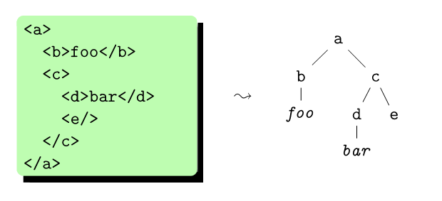Ces arbres ont plusieurs types de nœuds
- Nœuds élément (ici
a,b, etc.) : portent un nom et peuvent avoir n’importe quel nombre de fils. - Nœuds texte (ici
foo,bar) : ont un contenu textuel arbitraire ; ne peuvent pas avoir de fils.
Exemple de code XML
<?xml version='1.0' encoding='utf-8'?>
<!-- Example from www.w3.org -->
<catalog>
<tshirt code='T1534017' sizes='M L XL'>
<title>Staind: Been Awhile Tee Black (1-sided)</title>
<description>
Lyrics from the hit song 'It's Been Awhile' are shown in
white, beneath the large 'Flock & Weld' Staind logo.
</description>
<price currency='EUR'>25.00</price>
</tshirt>
</catalog>
Nœud d'instruction de traitement
Nœud commentaire
Nœud élément
Nœud texte
Nœud attribut
Parser du XML avec JavaScript
JavaScript pur
// Things to do when a response arrives
req.onreadystatechange = function(){
if (req.readyState == 4 && req.status == 200){
// Get the content of the text node in the description node
var descriptionNode = req.responseXML.getElementsByTagName("description")[0];
var descriptionTextNode = descriptionNode.childNodes[0];
var descriptionContent = descriptionTextNode.nodeValue;
}
}XML
<?xml version='1.0' encoding='utf-8'?>
<!-- Example from www.w3.org -->
<catalog>
<tshirt code='T1534017' sizes='M L XL'>
<title>Staind: Been Awhile Tee Black (1-sided)</title>
<description>
Lyrics from the hit song 'It's Been Awhile' are shown in
white, beneath the large 'Flock & Weld' Staind logo.
</description>
<price currency='EUR'>25.00</price>
</tshirt>
</catalog>Parser du XML avec JavaScript
Avec jQuery
$.ajax({
type: "GET",
url: "catalog.xml",
dataType: "xml",
success: function(xml){
var descriptionContent = $(xml).find("description").text();
console.log(descriptionContent);
}
});XML
<?xml version='1.0' encoding='utf-8'?>
<!-- Example from www.w3.org -->
<catalog>
<tshirt code='T1534017' sizes='M L XL'>
<title>Staind: Been Awhile Tee Black (1-sided)</title>
<description>
Lyrics from the hit song 'It's Been Awhile' are shown in
white, beneath the large 'Flock & Weld' Staind logo.
</description>
<price currency='EUR'>25.00</price>
</tshirt>
</catalog>JSON - JavaScript Object Notation
Utilise la syntaxe JavaScript
{
"tracks":[
{
"name":"Three Little Birds",
"artist":{
"name":"Bob Marley"
}
},
{
"name":"Don't Worry Be Happy",
"artist":{
"name":"Bobby McFerrin"
}
}
]
}À prononcer « d'geille - zone »
Types de données
6 types de données
- Objets
- Tableaux
- Chaîne de caractères
- Nombres
- Booléens
- null
{
"name": "Polyphemus",
"numberOfEyes": 1,
"isBadGuy": true,
"proofOfExistence": null,
"hobbies": [
"Drinking wine",
"Eating humans"
]
}Parser du JSON avec JavaScript
JavaScript
// Things to do when a response arrives
req.onreadystatechange = function(){
if (req.readyState == 4 && req.status == 200){
// Get the content of the text in the description
var json = JSON.parse(req.responseText);
var description = json.catalog.description;
}
}JSON
{
"catalog":{
"tshirt":{
"code":"T1534017",
"sizes":[ "M", "L", "XL" ]
},
"description":"Lyrics from the hit song 'It's Been Awhile' are shown in white, beneath the large 'Flock & Weld' Staind logo.",
"price":{
"currency":"EUR",
"value":25.00
}
}
}Ressources externes
Sur le Web
Cours en ligne et MOOC
- Cours en ligne d'OpenClassrooms
- Cours en ligne de Codecademy
- Introduction to Web Development, MOOC de Daniel Randall